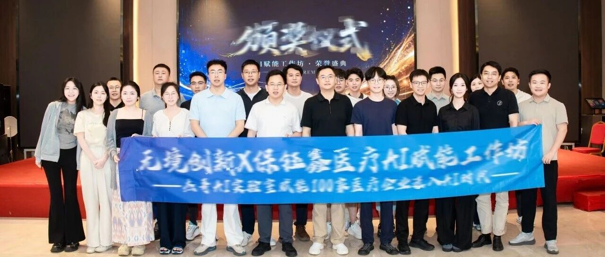

Real problem
Guorun Medical ran an AI workshop for middle and senior managers. Baoyuxin Medical explored supply-chain tasks, role-specific work and personal interests. Detailed project acceptance criteria will follow with the case materials.
Exploring practical AI use in healthcare supply chains and management.

Guorun Medical ran an AI workshop for middle and senior managers. Baoyuxin Medical explored supply-chain tasks, role-specific work and personal interests. Detailed project acceptance criteria will follow with the case materials.
Business-focused co-creation and individual and team presentations connected learning with hands-on practice. Baoyuxin Medical's workshop lasted two days and one night.
The client reports record 41 participating managers at Guorun Medical and 42 works created at Baoyuxin Medical. Business value, deployment status and subsequent acceptance results have not yet been supplied.